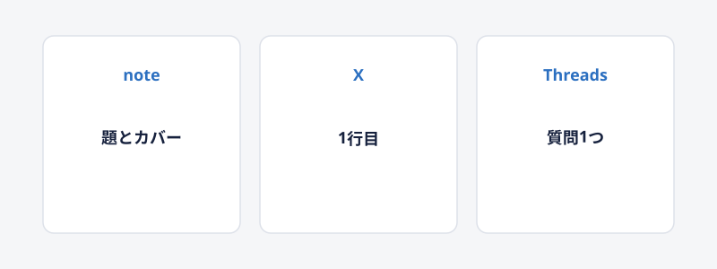

1. 媒体ごとに言い方を変える
チャネル戦略（チャネル・媒体の使い分け）
考え方
どの場所で、どの相手に、どう届けるかを決めることをチャネル戦略と呼びます。

同じ話でも、noteとXとThreadsでは伸びる書き方が違います。媒体ごとに読む人の気分と、1投稿の長さと、保存のされ方が違うためです。
片方で伸びた型は、もう片方でもそのまま役立つとは限りません。文面を写すより、媒体に合わせて書き直すほうが安全です。
実際の例
2026-09-15のX記事24本では、題の型ごとにいいねの中央値が分かれました。noteの売れ方とは向きが違うところがあります。
| 媒体 | いちばん前に置くもの | 長さの目安 | 販売の案内 |
|---|---|---|---|
| note | 題とカバー。誰が・何だけで・いくら、か、敷居を下げるラベル | 無料部分で今日使える1手順。有料は続き | 本文の途中と末尾。外部リンクは媒体の決まりの範囲 |
| X | 1行目。製品名と始め方ガイド、か、公式＋伏せ字 | 300字以上の長めが残りやすい。改行を多めに | プロフィールと固定投稿。投稿本文には短いCTAだけ |
| Threads | 1行目の自分ごと化。〜な人へ、質問1つ | 100字から299字。改行7行以上 | プロフィール。投稿へのリンク連貼りは控える |
見出しをクリックすると並べ替えできます。
Xでは敷居を下げるラベル型の中央値が749で、実額型は61でした。noteでは実額が題の上のほうに来ることがあります。同じ実額でも、Xでは「誰が・何だけで」が無いと沈みます。媒体をまたいで題を使い回さないでください。
保存がいいねの2倍を超えたX記事は、完全ガイドと大全と公式の推奨を題に持っていました。Xの読者は押すより先に取っておきます。網羅感のある語が残ります。Threadsは保存より返信と引用が動きやすいです。質問を1つ置く形が合います。
カバー画像の要否も媒体ごとに分かれます。Xの記事でカバー無しで押された7本は、全部が名前で読まれる書き手でした。中央値は73です。名前の無い書き手がカバー無しで出す根拠は、この24本にありません。noteの一覧はカバーで埋まります。題の写しだけにしないカバーを付けます。
「小学生でもわかる」シリーズはXで上位3つでした。同じ型を3本続けると、媒体の中で目印になります。noteで同じ型を続けるなら、シリーズの名前を題の外にも置いてください。Threadsで同じ文面を3本出すと、スパムに見えやすいです。型は残して、文面は毎回変えます。
やってみるなら
同じ内容を3媒体に出すときは、先にXの1行目を書きます。次にnoteの題へ、誰が・何だけでを足します。Threadsは100字台に縮めて、答えを最後に置きます。
noteの無料部分は手順です。Xの本文は理由と数字です。Threadsの本文は自分ごと化と質問です。
販売の案内は、noteでは本文内、XとThreadsではプロフィールです。
気をつけること
同じ文面をそのまま3媒体に貼らないでください。文字数と改行と、案内の位置を変えます。
外部の連絡先を本文にくり返し書くのは、XとThreadsの制限の元になります。noteでも、有料の外へ連れていく案内は規約を先に読んでください。
InstagramとThreadsは同じアカウント基盤です。Threads側の止めは、Instagram側にも波及します。